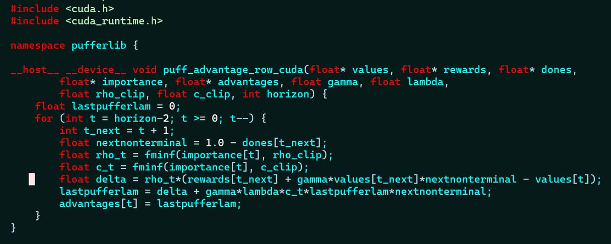
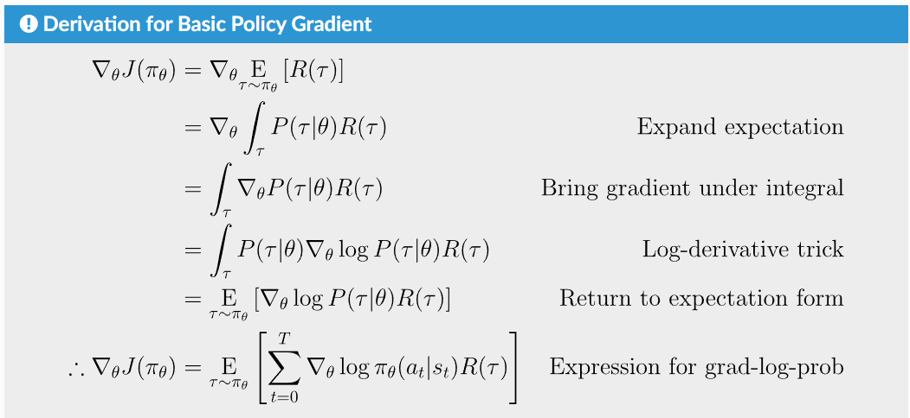
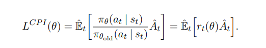
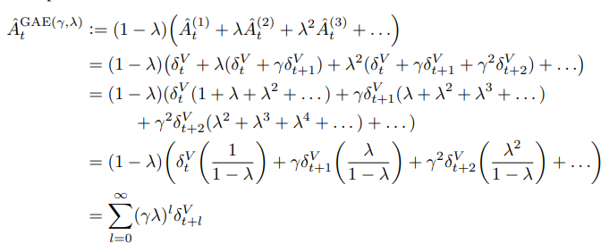
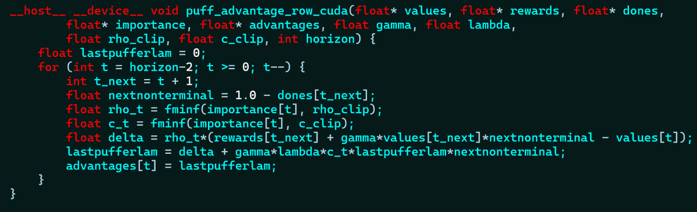
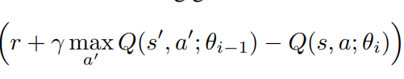
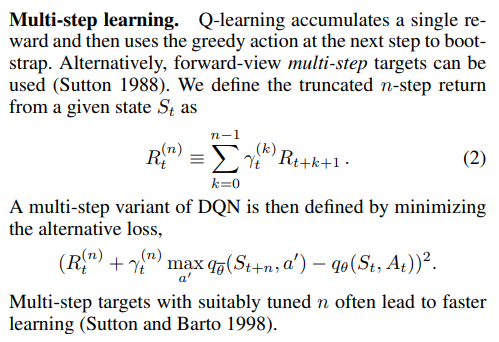
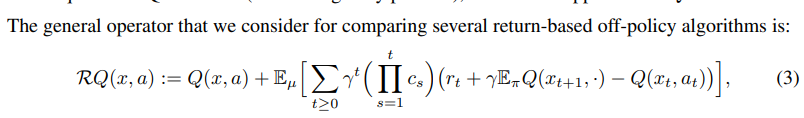
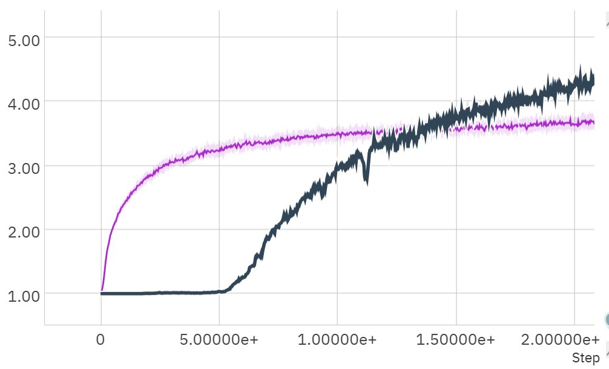

Why RL Failed to Bootstrap

Off-policy RL is slow. On-policy RL is data hungry. I figured out why. This is a precise technical summary of my findings from the past 3 weeks of research and literature review across various off-policy and model-based methods.
Background
I've previously written about what went wrong in reinforcement learning as a sort of high-level position paper. TL;DR: We optimized for sample efficiency with no regard to compute allocation, made responsible research impossible on academic compute budgets, and gave up to do LLMs. This is not a rehashing of those points. This is a set of precise technical findings fundamental to how different classes of RL algorithms are constructed.
On-policy RL works
Sort of. It does work but it's not exactly on-policy. Let me explain. Here's the basic derivation of policy gradients that I've stolen from OpenAI's Spinning Up docs:

If you're mathy, this should be pretty basic. If not, there are only a couple things that matter here:
- From the first line, this derivation assumes trajectories tau are sampled from the current policy pi_theta. In other words, data must be on policy.
- Regardless of that assumption, the final equation looks a lot like behavioral cloning. In fact, it's identical when R(tau)=1. Behavioral cloning just says: push logits towards actions a_t. Policy gradients says: do that but weight by the return at the current point. Return here is the (usually discounted) sum of rewards going forward from the current step.
- So the actual "on-policy" assumption is just that you can roll out future steps to compute the return. It's literally just the objective weighting of behavioral cloning.
Vanilla policy gradients is a bad algorithm, similar to DQN. But for DQN, you need to throw 6 different tricks at it before it becomes a useful algorithm. With policy gradients, you only need two. And neither of them are the one that normally comes to mind. PPO makes three major additions to vanilla policy gradients: a clipped objective, generalized advantage estimation, and an entropy bonus.

PPO clips based on this ratio of policies. When your data is on-policy, it becomes 1. So if you just run PPO in a fully online setting with a fast environment, you end up with good wall-clock performance without the main thing the algorithm is known for. You can do this by collecting 1 minibatch worth of samples at a time and doing 1 update. This actually works and we do it often in PufferLib. So what actually makes PPO work? Entropy bonus and generalized advantage estimation.

Or if you prefer, a few lines of CUDA:

Lambda and especially gamma are the two most crucial hyperparameters in RL after learning rate. Environments are rolled out for 64-step segments, and advantage estimation is applied over that entire horizon. Extensive hyperparameter sweeps confirm that most environments perform worse with shorter advantage horizons. So really, this is what makes RL tick, and the value function is dependent upon data coming from the current policy because it is directly predicting how well that policy will do if rolled out for longer.
Off-policy RL isn't
Off-policy RL is often presented as a more sample-efficient alternative to on-policy RL. It can be, but a lot of skeletons are hiding in the closet. Let's start with the basic DQN objective:

Similar to vanilla policy gradients, this is not really a usable algorithm. You have to bolt stuff on to it to get Rainbow or SAC. But that's missing the full story. PPO typically runs 1-4 updates per batch of data. That means each sample is used 1-4 times, with high-throughput works usually targeting 1. Off-policy RL work defines a "replay ratio" as the number of gradient steps to the number of environment steps. A replay ratio of 1 is not the same as 1 update epoch in PPO. Rainbow does 1 update on a minibatch of size 32 ever 4 environment steps. This yields a replay ratio of 1/4. CleanRL's standard PPO configuration uses 1/64, and PufferLib pushes this as low as 1/32768 to improve wall-clock training time. Sample-efficiency work pushes in the other direction, as high as 8. This is literally thousands of times the compute we would typically spend per unit of data in PufferLib.
If you have unlimited data, can you spend the same amount of compute to get equal results with on-policy and off-policy methods? It seems like the answer is no. On-policy methods have pushed higher and higher data throughput while off-policy methods have pushed higher and higher sample reuse. Why? On-policy RL is crucially dependent upon long-horizon bootstraps. Off-policy similarly defines a multi-step bootstrap:

BUT - and here's the key crucial difference - most implementations only bootstrap 3 (original Rainbow) or 5 steps. And they do worse when you try to bootstrap longer. Why? Why is it so crucial in on-policy learning but harmful in off-policy learning. It's because bootstrapping requires on-policy data! The intermediate steps are assumed to come from the current policy. That's what makes the reward estimate useful to the value (or Q) function. You can technically "fix" this with importance sampling, as is done in retrace:

Which is very similar to PufferLib's advantage function, except that we apply it to nearly on-policy data. When applied to very off-policy data, importance sampling effectively just throws away data. Here's a good test of sample reuse: could you mix in some expert data with the replay buffer and have it be used effectively? Most algorithms fail this test.
This is probably the reason that many of my off-policy data scaling experiments over the last few weeks have failed. For several reference implementations of common algorithms, simply decreasing the replay ratio and increasing total data causes divergence. If we wanted to be very thorough here, we could take a reference implementation of Rainbow and make it on-policy by removing the replay buffer. Join the discord if you'd like to help with follow-ups!
The Compute Gap
On-policy RL scales well with data but poorly with pure compute. Off-policy RL scales well with compute but poorly with pure data. The most important problem in RL right now is creating a clean, smooth tradeoff between compute and data. This was the motivation for my last three weeks worth of experiments and literature review. Here are a few key findings:
- Sample reuse is important. Even when you have unlimited data, keeping just a few high-information segments can heavily accelerate learning. I ran a set of experiments where I add a very small replay buffer (no more than 1/4 of a batch) to PufferLib's normal training code. Adding stale data monotonically decreases performance on simpler environments, but it makes a massive difference early in training on Neural MMO 3, our hardest environment:

2. Model-based approaches are not a clear win. Dynamics models scale better with compute than action models, but there is a steep up-front cost. Future state predictions have to remain accurate over several steps to avoid collapsing learning. You cannot invest a little compute into a dynamics model to get a little bit of sample efficiency. It's all or nothing. Dynamics models also share a similar long-horizon bootstrapping problem with model-free off-policy methods: it's typically hard to get coherent predictions over 64+ steps, so most methods are limited to 16 at most.
3. Simply tuning our trainer for sample efficiency is already a good baseline. So far, we've gotten breakout (the simplest task we use where results are almost always meaningful) from 90M frames at 4 frameskip = 360M down to 30M frames with no frameskip. So we can get 10x+ sample efficiency quite easily, at the price of training taking a few minutes instead of 30 seconds. But in reality, we don't need to match or beat SOTA sample efficiency. We just need a good compute-data tradeoff, where on real problems, you can also usually spend more compute running your simulator.
4. We still don't have a good way to mix sample reuse with long-horizon bootstrapping. Any reasonable integration would be a huge boon. One thing I tried that sort of worked on simple environments was just behavioral cloning high-advantage segments. The issue is that this doesn't let you train the value function, so it gets stale faster. It's possible we could decouple value updates to compensate like in PPG, but that would hurt the high data regime performance.
What's next?
My current goal is to explicitly model the compute/data tradeoff as part of large-scale automated hyperparameter optimization. This is going to have to include more sensitivity analysis, as I've noticed that hyperparameters are less robust with small batch sizes. Nobody has really done a disciplined analysis of what algorithmic changes yield progress at small vs. large compute and data scales. Right now, PufferLib's experiments only track progress in the high-data regime. By the next version, we'll be measuring progress over a much wider range of compute-data fronts.
Acknowledgement
This paper is the closest reference to what I've presented in this article, which considers the problem in the context of DQN with bootstrapping. My work here adds the context of modern high-performance RL with longer-form bootstraps, as well as the compute gap this causes vs. true off-policy methods.